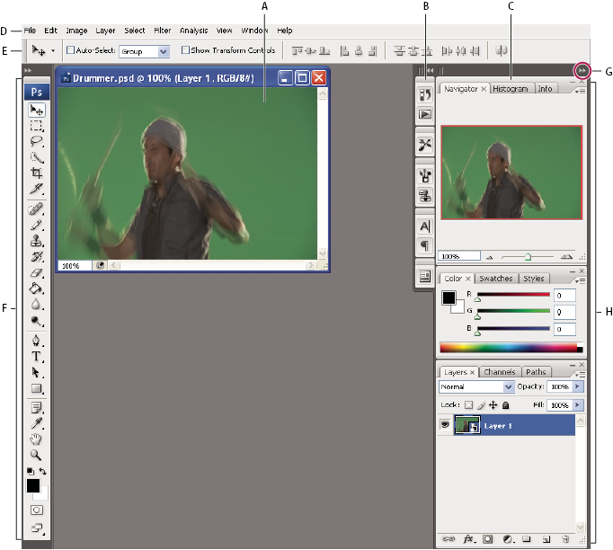

Default Photoshop workspace
A.
Document window
B.
Dock of panels collapsed to icons
C.
Panel title bar
D.
Menu bar
E.
Options bar
F.
Tools palette
G.
Collapse To Icons button
H.
Three palette (panel) groups in vertical dock